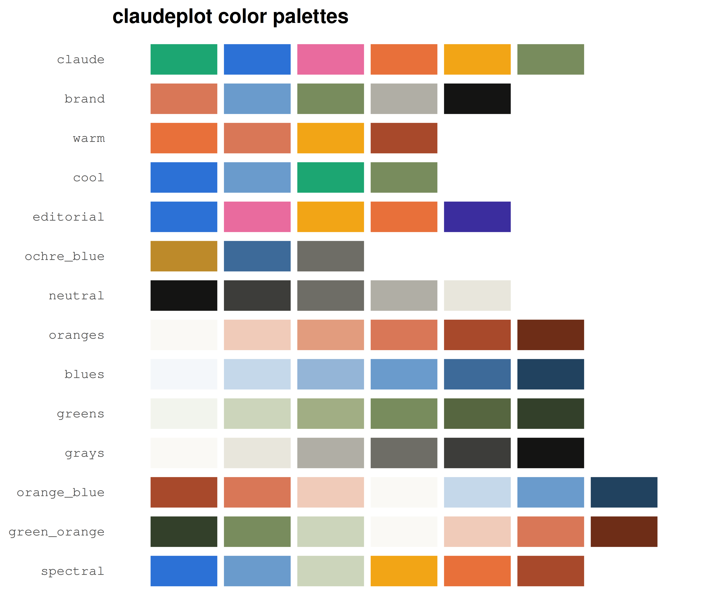
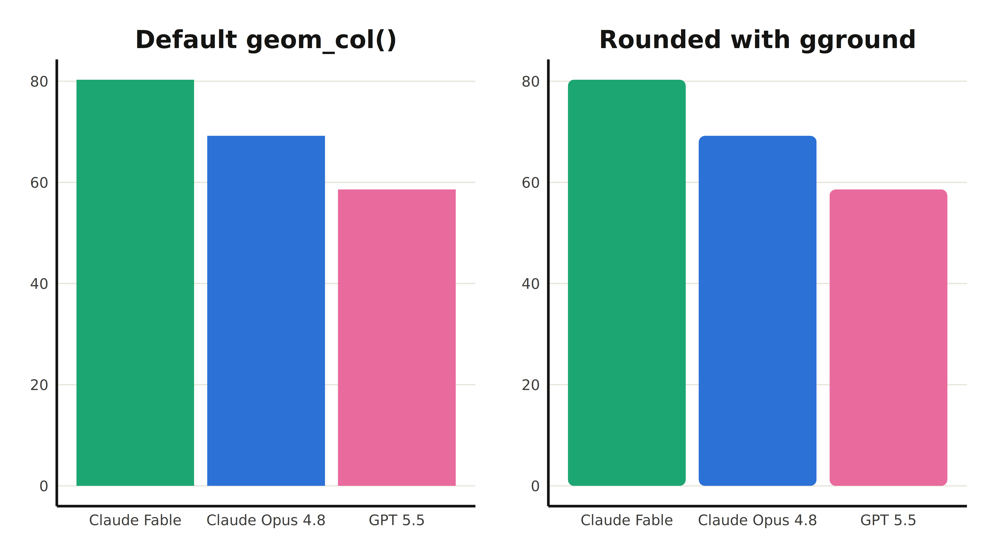

This package was (mostly) made in a single prompt using Claude Fable 5 as a test of the model’s abilities. On the day Fable 5 was launched, I decided to test it by asking it to make an entire R package in one single run. The result was quite satisfactory, as Fable 5 managed to make a working R package (0 errors and 0 warnings) with a vignette, a pkgdown website, and a GitHub repository.
The whole package is built around Anthropic’s visual identity, so it ships with a set of palettes drawn from their publications:

Looking back, the original prompt wasn’t even that thorough: it started out good but ended up being a bit lazy. Fable 5 ran for around 25-30 minutes inside T3 Code and cooked claudeplot.
The original prompt
Your goal is to create a ggplot2 theme extension package similar to ggthemes, hrbrthemes, ekioplot, insperplot, benviplot. The last three listed are local projects available in this directory. The package should have at minimum:
- A theme function
- Regular pair of scale_* functions with both color and colour variations.
- Two palette functions (one to show a particular palette, another to show all available palettes)
The inspiration is Anthropic and Claude’s visual design.
You should start by researching Anthropic’s visual design, specially the data visualizations projects. I will send some images but you should search for more.
The package should bundle Anthropic’s font scheme by default.
Not a priority now, but the package should have a README.md, pkgdown website, and one vignette.
Make sure the package is CRAN compliant.
After finishing this I added:
Add a small section to the README describing the process of making this package. Note that this was made on the day of the release of Claude Fable 5 as a test of Claude’s (you) capabilities. Note that this was generated (mostly) with a single prompt and with the aid of some useful templates. I’ll leave the writing to you, just keep it concise.
All of the code and text generated can be seen in the initial commit to the GitHub repo.
What worked well and caveats
I will list below some important caveats for this task.
-
There were several good templates to work from. As the prompt makes clear, the package should follow similar projects like
hrbrthemesandbenviplot. These provided useful templates for the model to start working. -
Building a (simple) R package should be a good task for an LLM. This is a bit more subjective, but I have a general sense that building an R package is a “good” task, since it has explicit goals and requirements. The model can always run
devtools::check()to get useful feedback and there are plenty of useful functions fromusethisanddevtoolsthat make it much easier to build a package. Similarly,pkgdownmakes it quite straightforward to build the package website. -
It failed to make fonts work without warnings. The first version of the package had some problems making the fonts work. I give this a pass since font management can be messy. Also, the overall implementation was good: fonts are bundled with the package and the package doesn’t depend on packages that carry side-effects like
showtext. -
It didn’t note that Anthropic uses rounded barplots. This is a very minor point, but the model didn’t realize that Anthropic always uses barplots that are rounded on the edges. While this wasn’t an explicit requirement, it would’ve been nice to see Fable acknowledging this (and even better if it had suggested a package like
ggroundedorggroundto better emulate this). The difference is subtle but recognisable, as shown below. Note thatggrounddoesn’t quite hit the mark since Anthropic’s columns are only rounded on the top. Still, it’s a close approximation and and more flexible thanggrounded1.
library(gground)
library(patchwork)
bars <- data.frame(
model = c("Claude Fable", "Claude Opus 4.8", "GPT 5.5"),
performance = c(80.3, 69.2, 58.6)
)
p_default <- ggplot(bars, aes(model, performance, fill = model)) +
geom_col() +
scale_fill_claude_d() +
guides(fill = "none") +
labs(title = "Default geom_col()", x = NULL, y = NULL) +
theme_claude()
p_rounded <- ggplot(bars, aes(model, performance, fill = model)) +
geom_round_col(radius = 4) +
scale_fill_claude_d() +
guides(fill = "none") +
labs(title = "Rounded with gground", x = NULL, y = NULL) +
theme_claude()
p_default + p_rounded
Goodbye to Fable 5
Overall, it’s fair to say that Fable 5 did a pretty good job. Like everyone else on the planet, I too am new to AI tools and models and am learning a lot about them every day. I’ve been using Claude Code since August 2025 with varying degrees of success and failure. It’s nice to see how far these models have come.
After the original prompt, I made some changes to how fonts are imported, and added some new palettes based on more recent Anthropic publications. In the near future I will continue to update the Replicating Charts vignette.
Finally, I couldn’t have known that Fable 5 was to be shut down, but this project gains (at least for now) some extra significance after the fact.